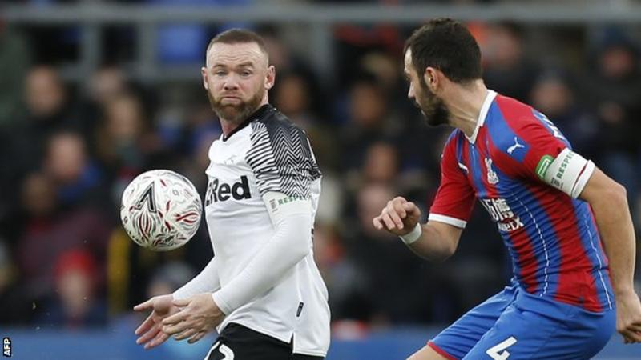
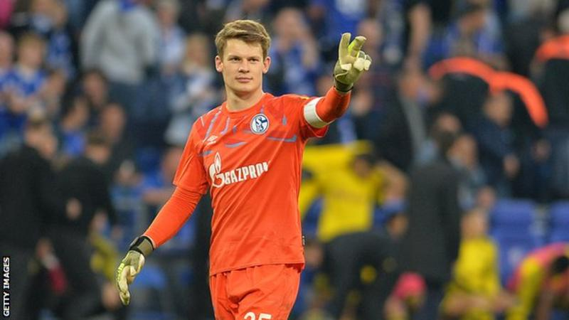
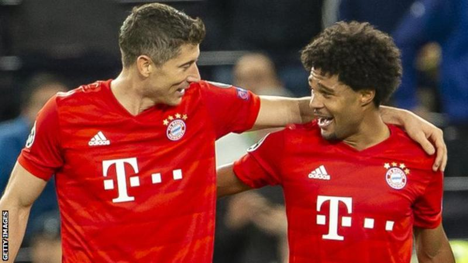
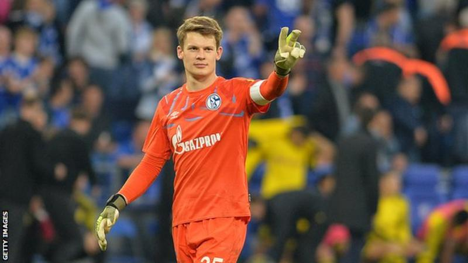
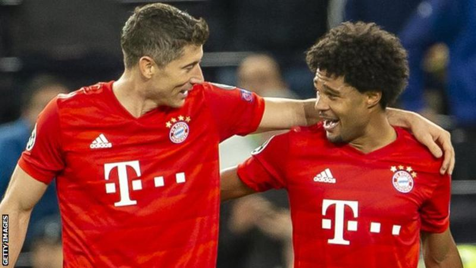

NEWS



Championship Derby knock Crystal Palace out of FA Cup
Derby County boss Phillip Cocu claimed Wayne Rooney played a pivotal role in his side's shock FA Cup third-round win at Crystal Palace. More ...

Alexander Nubel: Schalke keeper to join Bayern Munich in summer
Bayern Munich have announced that Schalke goalkeeper Alexander Nubel will join the club on a free transfer in the summer. More ...
January transfer window 2020: Who could be on the move?
It's that time of the season again. More ...

Champions League: What have we learned from group stage?
The highest-scoring Champions League group stages ever have come to an end with the usual suspects qualifying - but there are some unfamiliar names among the top goalscorers. More ...
Union Berlin: The German fans who bleed for their club
"The fans even donated blood. You get paid for donating blood in Germany. The money they got for it kept the club alive." More ...